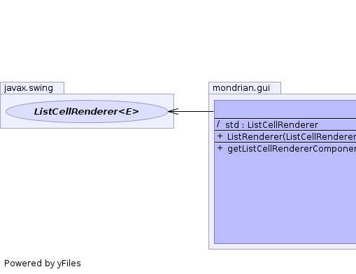
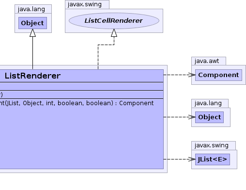

class ListRenderer extends Object implements ListCellRenderer
ListRenderer ...|  |  |
| Modifier and Type | Field and Description |
|---|---|
(package private) ListCellRenderer |
std |
| Constructor and Description |
|---|
ListRenderer(ListCellRenderer override) |
| Modifier and Type | Method and Description |
|---|---|
Component |
getListCellRendererComponent(JList list,
Object value,
int index,
boolean isSelected,
boolean cellHasFocus) |
ListCellRenderer std
public ListRenderer(ListCellRenderer override)
public Component getListCellRendererComponent(JList list, Object value, int index, boolean isSelected, boolean cellHasFocus)
getListCellRendererComponent in interface ListCellRenderer